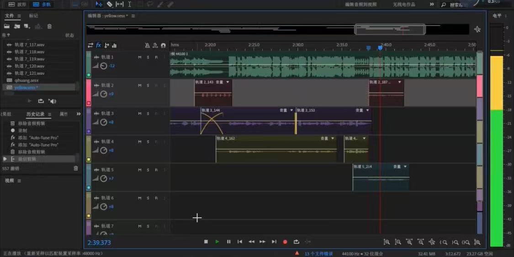

01 // equipment
song cover
I started recording cover songs in junior high school. My mom bought me a Focusrite sound card, a microphone and a pair of monitoring headphones. And I also learned to do post-production by myself.

02 // Self-study the AU software for post-production.
PIANO
I have perfect pitch and was able to write down songs I heard in simple notation when I was very young. I started learning the electronic organ at the age of four and switched to the piano at eight. This is a video of me playing a Steinway at NYUSH.